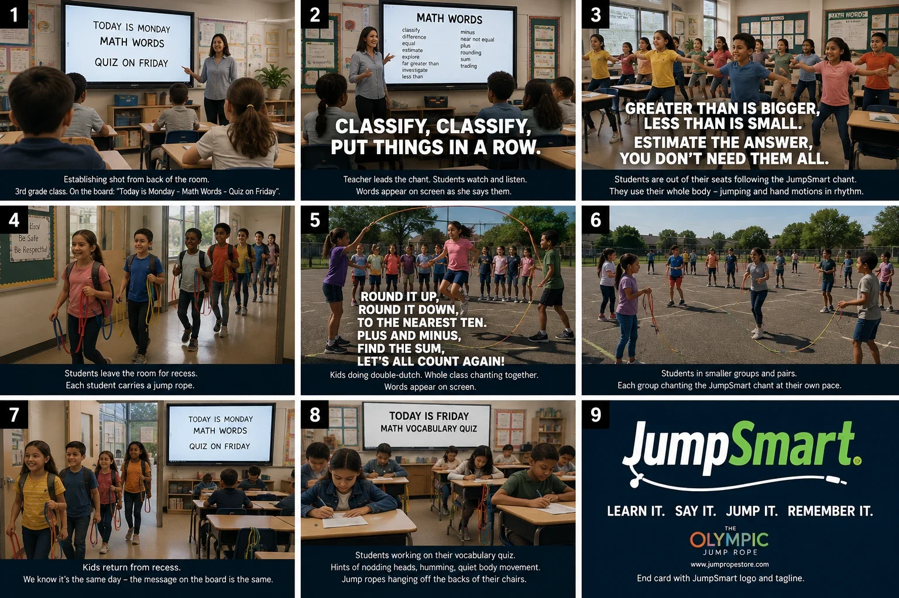

JumpSmart: реалістичний клас, де діти співають і стрибаютьJumpSmart: a realistic classroom where kids chant and jump
The Jump Rope Store зі США запускав освітню методику: діти вчать математичні терміни через ритм, речитатив і рух. Потрібне було відео для вчителів і директорів шкіл, яке виглядає як справжня зйомка в класі, а не мультфільм.The Jump Rope Store from the US was launching a teaching method where kids learn maths terms through rhythm, chanting and movement. They needed a video for teachers and school leaders that looks like a real classroom shoot, not a cartoon.
♪ Торкніться відео, щоб увімкнути звук і почути речитатив♪ Tap the video to turn on sound and hear the chant
Після цього відео клієнт запропонував постійну співпрацю: щомісячні рекламні ролики і серію освітніх відео JumpSmart. Зараз ми вже працюємо над наступними проєктами.After this video the client offered ongoing work: monthly ad videos and a JumpSmart educational series. We're already working on the next projects.
Сторіборд клієнта на 9 сценThe client's 9-scene storyboard

Клієнт надав статичні кадри. Ми перетворили їх на живе відео з тими самими дітьми, вчителькою і класом від першої до останньої сцени.The client provided still frames. We turned them into live video with the same kids, teacher and classroom from the first scene to the last.
ЗадачаThe brief
Клієнт обирав виконавця через платний тест: усі кандидати робили 2 сцени з 9, і за результатом обирали одного. Тест виграли ми.The client picked the creator through a paid test: every candidate made 2 of the 9 scenes, and one was chosen. We won the test.
The finished piece should NOT look like traditional cartoon animation. We want believable children, natural movement, a realistic classroom environment and, very importantly, consistent characters and visual style from scene to scene.
«Результат НЕ має виглядати як мультфільм. Нам потрібні правдоподібні діти, природні рухи, реалістичний клас і, що дуже важливо, однакові персонажі та стиль від сцени до сцени».
Чому це складноWhy it was hard
- 01Реалістичні діти.Realistic children. Десятки дітей у кадрі, кожен рухається по-своєму, без викривлених облич і «пластику».Dozens of kids on screen, each moving differently, with no warped faces or plastic look.
- 02Консистентність на 9 сцен.Consistency across 9 scenes. Ті самі діти, вчителька, одяг і клас у класі, коридорі і на шкільному майданчику.The same kids, teacher, clothes and classroom across the classroom, hallway and playground.
- 03Фірмові скакалки.Branded jump ropes. Справжні скакалки Olympic Jump Rope з логотипами на ручках і кольорами, що чергуються. AI постійно хоче їх «спростити», тож кожен кадр перевіряли за референсами продукту.Real Olympic Jump Ropes with logos on the handles and alternating colours. AI keeps trying to simplify them, so every shot was checked against product references.
- 04Спів і рухи в ритм.Chanting and moving in rhythm. Діти співають речитатив, стрибають і показують жести. Слова на екрані звучать і збігаються з рухами губ і ритмом.Kids chant, jump and gesture. The on-screen words are heard and match lip movement and rhythm.
- 05Подвійна скакалка.Double Dutch. Складна фізика: дві скакалки, стрибки і дитина в центрі в одному кадрі.Tricky physics: two ropes, jumping and a child in the middle, all in one shot.
РезультатResult
Тест виграний, відео здане, клієнт став постійнимTest won, video delivered, the client became a regular
"I like the revised Slides 3 and 4, and I would like to move forward with you on the remaining scenes. If you can maintain this same quality and visual style throughout the rest of the video, I think we are in very good shape."
«Мені подобаються доопрацьовані сцени 3 і 4, і я хочу продовжити з вами решту сцен. Якщо збережете таку ж якість і стиль до кінця, ми в дуже хорошій формі».
"I would much rather develop a dependable relationship with one talented designer who understands our products and creative direction than start over with a different freelancer for every project."
«Я волію побудувати надійну співпрацю з одним талановитим дизайнером, який розуміє наші продукти і креативний напрям, ніж щоразу починати з новим фрилансером».
Brian Pete, The Jump Rope Store